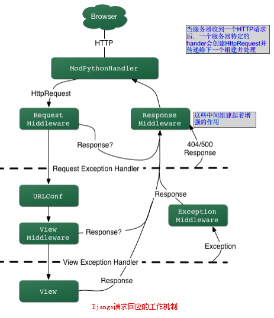

django基础
Table of Contents
2 安装
ubuntu上
sudo apt-get intall python-django #验证 >>> import django >>> django.VERSION (1, 3, 1, 'final', 0)
2.1 创建一个项目
2.1.1 创建项目mysqite
django-admin startproject mysite
mysite目录结构：
~/mysite/
|- manage.py
|- mysite/
|- __init__.py
|- setting.py
|- urls.py
|- wsgi.py
- __init__.py:让Python把该目录当成一个开发包(即一组模块)所需的文件
- manage.py:一种命令行工具，以多种方式与django项目交互
- settings.py:该Django项目的设置
- urls.py:该Django项目的URL设置
2.1.2 启动服务
mysite下
python manage.py runserver
这将会在端口8000启动一个本地服务器,浏览器访问 http://127.0.0.1:8000/, 可以看到django欢迎页面。 更改主机端口
python manage.py runserver 8080 #让django监听所有的网络接口，因此其他电脑就能连接到。 python manage.py runserver 0.0.0.0:8000
3 视图和URL
views.py(视图):导入声明，定义视图函数.
urls.py(URLconf):URLconf就像是Django所支撑网站的目录。它是URL与视图函数之间的映射表。用来告诉django某个url调用哪个视图函数。
3.1 demo
3.1.1 views.py
mysite目录下创建views.py
# -*- coding: utf-8 -*- #从django.http模块中导入HttpResponse类 from django.http import HttpResponse import datetime def hello(request): return HttpResponse("Hello world") def current_datetime(request): now=datetime.datetime.now() html="<html><body>现在时刻：%s.</body></html>" %now return HttpResponse(html) def my_homepage_view(request): return HttpResponse("nothing")
- HttpResponse类位于django.http模块中,需要导入
- (views.py)视图中每一个函数称作视图函数。每个视图函数至少包含一个参数,即request,这是触发该视图、包含当前Web请求信息的对象，是类django.http.HttpRequest的一个实例.
- 每一个视图(views)都需要实例化、处理和返回HttpResponse对象
一般情况下，创建一个HttpResponse时，以字符串的形式传递页面内容给HttpResponse构造函数。
3.1.2 urls.py
url就像一座桥梁，通过这个桥梁我们才找到视图中对应的代码，渲染的模板（暂时没有用到模板），而这一切都通过URLConf(即urls.py)，在我们django-admin startproject mysite后，该脚本会自动建立一份URLConf（即urls.py文件），我们可以在settings.py中找到它的真身，如下：
... ROOT_URLCONF = 'mysite.urls' ...
urls.py打开如下
from django.conf.urls.defaults import * #[1] # Uncomment the next two lines to enable the admin: # from django.contrib import admin # admin.autodiscover() urlpatterns = patterns('', #[2] # Example: # (r'^mysite/', include('mysite.foo.urls')), # Uncomment the admin/doc line below and add 'django.contrib.admindocs' # to INSTALLED_APPS to enable admin documentation: # (r'^admin/doc/', include('django.contrib.admindocs.urls')), # Uncomment the next line to enable the admin: # (r'^admin/', include(admin.site.urls)), )
- 从django.conf.urls.defaults导入所有模块，它们是Django URLconf的基本构造,其中包括了一个叫做patterns的函数
- patterns()函数将处理结果保存到urlpatterns变量中,patterns函数当前只有一个参数—一个空的字符串
编辑该文件以展示hello和current_datetime视图
from django.conf.urls.defaults import * from mysite.views import hello, current_datetime, my_homepage_view urlpatterns = patterns('', ('^hello/$', hello), (r'^time/$',current_datetime), ('^$', my_homepage_view), )
- patterns函数中的参数其实就是一个元祖，元组第一个元素是一个正则表达式，后边是对应的视图函数
- 在浏览器中通过输入http://127.0.0.1:8000/time ，Django在URLconf中的所有URL模式中，查找第一个匹配/time/的条目。如果匹配成功，调用相应的视图函数，则视图函数返回一个HttpResponse,Django转换HttpResponse为一个适合的HTTP response， 以Web page显示出来，(在没有模板定义的情况下)显示输出结果。
- Django在检查URL模式前，移除每一个申请的URL开头的斜杠()。这意味着我们为/hello/写URL模式不用包含前面的斜杠();任何不匹配或尾部没有斜杠(/)的申请URL，将被重定向至尾部包含斜杠的相同字眼的URL。（这是受配置文件setting中APPEND_SLASH项控制的.
- 访问http://127.0.0.1:8000/time 会发现时间是不对的，那是因为django的时区设置有问题，修改setting.py的时区,TIME_ZONE = "Asia/Shanghai"
3.1.3 常用到的正则表达式
| 符号 | 匹配 |
|---|---|
| .(dot) | 任意单个字符 |
| \d | 任意一位数字 |
| [A-Z] | A 到 Z中任意一个字符（大写） |
| [a-z] | a 到 z中任意一个字符（小写） |
| [A-Za-z] | a 到 z中任意一个字符（不区分大小写） |
| + | 匹配一个或更多 (例如, \d+ 匹配一个或 多个数字字符) |
| [^/]+ | 一个或多个不为'/'的字符 |
| ? | 零个或一个之前的表达式（例如：\d? 匹配零个或一个数字） |
| * | 匹配0个或更多 (例如, \d* 匹配0个 或更多数字字符) |
| {1,3} | 介于一个和三个（包含）之前的表达式（例如，\d{1,3}匹配一个或两个或三个数字） |
3.2 django处理请求的工作机制
- 用manage.py runserver 启动Django服务器时就载入了在同一目录下的settings.py。该文件包含了项目中的配置信息，如前面将的URLConf等，其中最重要的配置就是ROOT_URLCONF，它告诉Django哪个Python模块应该用作本站的URLConf,默认的是urls.py
- 当访问url的时候，Django会根据ROOT_URLCONF的设置来装载URLConf。
- 然后按顺序逐个匹配URLConf里的URLpatterns。如果找到则会调用相关联的视图函数，并把HttpRequest对象作为第一个参数(通常是request)
- 最后该view函数负责返回一个HttpResponse对象，

3.3 更进一步：动态url
接下来深入一下url的映射，实现动态的url。
我们要做到就是在url后输入一些参数，从而实现不同的调用内容（如在url后输入数字(小时)来显示当前时间累加后的时间，如当前时间是6:20,在浏览器中输入….time/plus/3,则显示9:20）的小实例
这里使用带通配符的URL匹配模式。本例中用\d+匹配一个或多个数字.
urls.py
from django.conf.urls.defaults import * from mysite.views import current_datetime, hours_ahead urlpatterns = patterns('', (r'^time/$', current_datetime), (r'^time/plus/(\d+)/$',hours_ahead), #[1]不加()会报错 # (r'^time/plus/(\d{1,2})/$', hours_ahead), #限制最大99 )
- 我们想要把这些数字作为参数，用圆括号把\d+或\d{1,2}包围起来,正则表达式也是用圆括号来从文本里提取数据的
views.py
# -*- coding: utf-8 -*- #从django.http模块中导入HttpResponse类 from django.http import HttpResponse import datetime def current_datetime(request): now=datetime.datetime.now() html="<html><body>现在时刻：%s.</body></html>" %now return HttpResponse(html) def hours_ahead(request,offset): #[1] try: offset=int(offset) except ValueError: raise Http404() dt=datetime.datetime.now()+datetime.timedelta(hours=offset) html="<html><body>In %s hours it will be %s.</body></html>" %(offset,dt) return HttpResponse(html)
- hours_ahead有两个参数,offset是从匹配的URL中提取出来的.注意：捕获值永远都是字符串（string）类型，而不会是整数（integer）类型,这个函数做的第一件事就是将字符串转换为整数。如果在一个不能转换为整数的值上调用int()，pyhon将抛出ValueError异常，最终显示404页面.
4 模板
4.1 介绍
前面的例子中是将HTML硬编码在python代码中，Django内建有一个简单且强大的模板处理引擎来让你分离设计HTML页面和编写Python代码这两种工作。
4.1.1 模板组织形式
模板是一个文本，用于分离文档的表现形式和内容。 模板定义了占位符以及各种用于规范文档该如何显示模板标签。模板通常用于产生HTML，但是Django的模板也能产生任何基于文本格式的文档。下面的模板描述了一个致谢的HTML页面。
<html> <head><title>标题</title></head> <body> <p>Dear {{ person_name }},</p> <p>Thanks for placing an order from {{ company }}. It's scheduled to ship on {{ ship_date|date:"F j, Y" }}.</p> <p>Here are the items you've ordered:</p> <ul> {% for item in item_list %} <li>{{ item }}</li> {% endfor %} </ul> {% if ordered_warranty %} <p>Your warranty information will be included in the packaging.</p> {% endif %} <p>Sincerely,<br />{{ company }}</p> </body> </html>
其中：{{ xxx }}是模板变量,{% xxx %}是模板标签,{{ xxx|xxx:… }}是过滤器.
这个例子中的{{ ship_date|date:"F j, Y" }}，我们将变量ship_date传递给date过滤器，同时指定参数”F j,Y”。date过滤器根据参数进行格式化输出。
4.1.2 常用模板标签
4.1.2.1 if/else
{% if today_is_weekend %}
<p>Welcome~</p>
{%else %}
<p>NO!</p>
{% endif %}
{% if %}标签检查today_is_weekend值是否为True。如果是，模板系统将显示{% if today_is_weekend %}和{% else %}之间的内容；否则将显示{% else %}和{% endif %}之间的内容。
{% else %}是可选的.
python中空列表，空元组，空字典，空字符串，0，None，False的布尔值是False，其它视为True.
{% if %}还可以与and、or、not一起使用，判断一个或多个变量，或者取反(not)
注意：
- 不允许同时使用and、or，多次使用一个逻辑操作符是可以的。
- 不支持圆括号来组合比较操作
- 没有{% elif %}标签，可以用嵌套{% if %}来表达。
- 每一个{% if %}标签要对应{% endif %}关闭标签,否则django会抛出TemplateSyntaxError。
4.1.2.2 for
<ul>
{% for person in Person_list %}
<li>{{ person.name }}</li>
{% endfor %}
</ul>
注意：
- 我们也能够嵌套for
- Django不支持退出循环，不支持continue
- {% for %}标签内置了一个forloop模板变量，它含有一些属性提供循环的信息：
- forloop.counter表示循环的次数，它从1开始计数，第一次循环设为1
- forloop.counter0类似于forloop.counter，但它是从0开始计数，第一次循环设为0
- forloop.revcounter表示循环中剩下的items数量，第一次循环时设为items总数，最后一次设为1
- forloop.revcounter0类似于forloop.revcounter，第一次循环时设为items总数减一，最后一次循环时为0
- forloop.first当第一次循环时值为True。
{% for object in objects %} {% if forloop.first %}<li class="first">{% else %}<li>{% endif %} {{ object }} </li> {% endfor %} - forloop.last当最后一次循环时值为True
- forloop.parentloop在嵌套循环中表示父循环的forloop
- forloop只能在循环中使用，解析器碰到{% endfor %}，就不能再访问了。
4.1.2.3 ifequal/ifnotequal
{% ifequal %}比较两个值，如果相等，则显示{% ifequal %}和{% endifequal %}之间的所有内容：
{% ifequal a b %}
<h1>Welcome!a and b</h1>
{% endifequal %}
注意：
- {% ifequal %}标签支持{% else %},这一点不再累述
- 模板变量，字符串，整数和小数都可以作为{% ifequal %}的参数
- 其它的Python类型，如字典、列表或布尔类型不能硬编码在{% ifequal %}里面
- 如果你需要测试某个变量是true或false，用{% if %}即可
4.1.2.4 block
定义了一个被子模块覆盖的区块，在模板继承知识点可深入
4.1.2.5 comment
模板引擎会忽略掉{% comment %}…{% endcomment %}之间的内容,多行注释
4.1.2.6 extends
标记当前模板扩展一个父模板
其他的模板标签可以在以后的章节中详细学习，也可在django 官方文档中查阅
4.1.3 模板注释
Django模板语言允许注释{# #}，模板渲染时注释不会输出，一个注释不能分成多行
{# This is a comment #}
4.1.4 过滤器
4.1.4.1 简介
- 模板过滤器是一种便捷的转换变量输出格式的方式，通过(|)管道来申请一个过滤器，
如姓名转换成小写：
{{ name|lower }} - 过滤器可以串成链，即一个过滤器的结果可以传向下一个
{{ my_text|escape|linebreaks }} - 有些过滤器需要参数，参数跟随冒号之后，使用双引号包含，如显示变量bio的前30个字，
{{ bio|truncatewords:"30" }}
4.1.4.2 常用过滤器
4.2 命令行解释器中直接使用模板
先直接用命令行解释器，看看模板系统是如何独立工作的。
4.2.1 Template的使用方式
在Python代码中使用Django模板的最基本方式如下：
- 用原始的模板代码字符串创建一个Template对象，Django同样支持用指定模板文件路径的方式来创建Template对象;
- 调用模板对象的render方法，并且传入一套变量context。它将返回一个基于模板的展现字符串，模板中的变量和标签会被context值替换。
示例代码：
python manage.py shell #1 >>> from django import template #2 >>> t = template.Template('My name is {{ name }}.') #3 >>> c = template.Context({'name': 'Andy'}) #4 >>> t.render(c) #5 u'My name is Andy.' #6 >>> print t.render(c) My name is Andy. >>> print t.render(Context({'name': 'May'})) #7 My name is May.
- 模板系统依赖配置文件，这种方式启动解释器会自动处理环境变量。或者用python/ipython启动解释器，先>>>from django.conf import settings >>>settings.configure()
- 导入模块
- 创建Template对象.Template类就在django.template模块中，构造函数接受一个参数，模板代码字符串。
- 用context给Template对象传递数据。一个context是一系列变量和它们值的集合。 context在Django里表现为Context类,在django.template模块里。Context类的构造函数带有一个可选的参数：一个字典——变量和值的映射.
- 调用Template对象的render()方法并传递context来填充模板(渲染)
- t.render(c)返回的值是一个Unicode对象，不是普通的Python字符串
- 使用同一模板可以渲染多个context，只进行一次模板创建然后多次调用render()方法。
使用Django模板系统的基本规则：写模板，创建Template对象，创建Context，调用render()方法。Template构造函数参数是字符串，Context的参数为字典。
4.2.2 句点进行深度变量查找
模板系统能够非常简洁地处理复杂的数据结构，例如list、dictionary和自定义的对象。使用句点(.)遍历复杂的数据结构。
句点查找顺序：
- 字典类型查找 (比如 foo["bar"])
- 属性查找 (比如 foo.bar)
- 方法调用 (比如 foo.bar())
- 列表类型索引查找 (比如 foo[bar]),不允许负数列表索引。
句点查找可以多级深度嵌套。
>>> from django.template import Template, Context >>> person = {'name': 'Andy', 'age': '18'} #调用字符串的upper()函数，注意没有() >>> t = Template('{{ person.name.upper }} is {{ person.age }} years old.') >>> c = Context({'person': person}) >>> print t.render(c) ANDY is 18 years old.
4.2.3 方法调用行为
- 在方法查找过程中，如果某方法抛出一个异常,如果该异常有silent_variable_failure属性并且值为True，则模板里的指定变量会被置为空字符串
- Django模板中的方法调用仅限于那些没有参数的方法，找不到这样的函数就会移动到下一步的查找(即列表索引查找)
4.2.4 无效变量
默认情况，如果一个变量不存在，模板系统会将其展示为空字符串。
4.2.5 Context对象
Context对象的初始化参数是字典，可以用标准的python语法操作。
4.3 在视图中使用模板
通过在命令行解释器中直接使用模板了解了模板系统的基础知识。下面将模板系统与视图结合起来。
我们将模板置于一个单独的文件中，并用视图来加载，这样就解决了模板直接嵌入python代码的问题。 实现数据与表现的分离。
4.3.1 定义templates目录
修改settings.py,配置templates目录
TEMPLATE_DIRS = ( '/home/wchunx/mysite/mysite/templates',
- 可以指定任何目录，只要那个目录下的目录和模板对于你的Web服务器运行时的用户是可读的
如果你找不到一个放置模板的位置，推荐在Django工程目录下创建一个templates目录
- 不要忘了模板目录最后的逗号，Python需要逗号来区分单元素元组和括号括起来的语句,如果你想避免这个错误，可以用列表来替代元组，单元素列表不需要结尾的逗号;元组比列表略微高效，所以我们推荐使用元组
- 使用绝对路径很简单，如果你想更灵活和松耦合，settings.py本身就是Python代码,可以在其中加入：
import os.path TEMPLATE_DIRS = ( os.path.join(os.path.dirname(__file__), 'templates').replace('\\','/'), )
Python内部变量 __file__被自动设置为代码所在的Python模块文件名
4.3.2 编写template文件
项目目录mysite下创建templates文件夹，创建current_datetime.html
<html><body>It is now {{ current_date }}.</body></html>
模板文件是current_datetime.html，但这个与.html后缀没有直接的联系。你可以选择任意后缀的任意文件，只要是符合逻辑的都行。甚至选择没有后缀的文件也不会有问题。
4.3.3 编写视图函数
from django.template.loader import get_template from django.template import Context from django.http import HttpResponse import datetime #最初的视图函数 #def current_datetime(request): # now=datetime.datetime.now() # html="<html><body>现在时刻：%s.</body></html>" %now # return HttpResponse(html) #使用django模板来修改该视图函数,实际html语句仍嵌入在python代码中 #def current_datetime(request): # now=datetime.datetime.now() # t=Template('<html><body>现在时刻是:{{current_date}}</body></html>') # c=Context({'current_date':now}) # html=t.render(c) # return HttpResponse(html) #html语句放在模板文件,以加载模板的方式 def current_datetime(request): now = datetime.datetime.now() t = get_template('current_datetime.html') html = t.render(Context({'current_date': now})) return HttpResponse(html)
使用了函数django.template.loader.get_template()加载模板文件，该get_template()函数以模板名称为参数，在文件系统中找出模板的位置，打开文件并返回一个编译好的Template对象
get_template()方法会自动连接已经设置的TEMPLATE_DIRS目录和传入的模板名称参数。
4.3.4 简化流程
Django提供了一个捷径来使用一行代码完成载入模板，填充Context，渲染模板，返回HttpResponse对象的工作，这就是render_to_response()，它在django.shortcuts模块下。大部分情况下，你都会使用render_to_response()而不是手动完成上述的事情
使用render_to_response()重写current_datetime
from django.shortcuts import render_to_response #import import datetime #使用render_to_response优化处理 def current_datetime(request): now = datetime.datetime.now() return render_to_response('current_datetime.html', {"current_date":now})
- 我们不再需要导入get_template、 Template 、Context和HttpResponse 。相反，我们导入django.shortcuts.render_to_response 。import datetime 继续保留。
- 在current_datetime 函数中，我们仍然进行now计算，但模板加载、创建Context、模板渲染和HttpResponse创建工作均在对render_to_response()的调用中完成了
- render_to_response()的第一个参数应该是使用的模板名，对应到模板目录的相对路径,第二个参数如果有的话应该是一个用来创建Context的字典，如果不提供第二个参数，render_to_response()将使用一个空的字典。
- render_to_response返回HttpResponse对象,所以我们return之。
4.3.5 locals()技巧
像上面的，计算一些值后存储在局部变量中(例如now)并传递给模板,懒程序员可能会觉得有点繁琐，既要给临时变量取名又要给模板变量取名这不仅仅是冗余，还是过度输入,如果你很懒或者你想保持代码整洁，可以使用Python内建的locals()方法
locals()返回了函数执行到该时间点时所定义的一切变量和它们的值的字典，上面的代码可以重写：
def current_datetime(request): current_date = datetime.datetime.now() return render_to_response('current_datetime.html', locals())
- 这里我们传递locals()的值而不是手动指定context字典，我们把now变量重命名为current_date，因为模板需要的({{ current_date }})是这个变量名。这个例子中locals()不会给你太大改善，但这个技术可以帮你少敲键盘。
- 使用locals()需要注意的是它包含了所有当前变量，可能包括比你的模板想访问的更多,上面的例子中，locals()也包括request变量，这依赖于你的程序。
- 最后要注意的是locals()导致了一点点开销，因为Python不得不动态创建字典，如果你手动指定context字典则可以避免这项开销。
4.3.6 模板子目录
如果模板文件存放在子目录中，只需在调用get_template()时，把子目录名和一条斜杠添加到模板名称之前，如：
t = get_template('dateapp/current_datetime.html')
由于render_to_response()只是对get_template()的简单封装，你可以对render_to_response()的第一个参数做相同处理。
return render_to_response('dateapp/current_datetime.html', {'current_date': now})
4.3.7 include模板标签
include标签允许你引入另一个模板的内容，标签的参数是你想引入的模板的名字，名字可以是变量，也可以是单引号或双引号表示的string。每当在多个模板中出现相同的代码时，就应该考虑是否要使用{% include %}来减少重复。
与get_template()中一样，include的模板路径也是基于TEMPLATE_DIRS的。
{# mypage.html #}
<html>
<body>
{% include "includes/nav.html" %}
<h1>{{ title }}</h1>
</body>
</html>
{# includes/nav.html #}
<div id="nav">
You are in: {{ current_section }}
</div>
如果给定的模板名不存在，Django将做下面两件事情中的一件：
- 如果DEBUG设置为True，你将看到一个TemplateDoesNotExist异常的错误页面
- 如果DEBUG设置为False，标签位置将什么也不显示
4.3.8 模板继承extends
实际开发中，需要减少页面公共区域引起的重复和冗余代码。
include标签可以实现，将模板的公共部分保存为不同的模板片段，然后在每个模板中include,
更好的办法是模板继承。
4.3.8.1 建立基础模板
base.html
<!DOCTYPE HTML PUBLIC "-//W3C//DTD HTML 4.01//EN"> <html lang="en"> <head> <title>{% block title %}{% endblock %}</title> </head> <body> <h1>My helpful timestamp site</h1> {% block content %}{% endblock %} {% block footer %} <hr> <p>Thanks for visiting my site.</p> {% endblock %} </body> </html>
这是一个主模板(基础模板)，其他子模板的作用就是重载、继承、添加那些块的内容，{% block %}告诉模板引擎子模块可以重载这部分。这个例子定义了三个子模板要填写的block。
4.3.8.2 建立子模板
修改current_datetime.html
{% extends "base.html" %}
{% block title %}The current time{% endblock %}
{% block content %}
<p>It is now {{ current_date }}.</p>
{% endblock %}
这里的{% extends %}标签是最关键的. 它告诉模板引擎这个模板 “扩展” 了另一个模板. 当模板系统要应用该模板时,首先它会去寻找父模板–在这里是 "base.html" .
模板引擎会注意到在base.html里有三个block并用子模板的相关内容替换这些block.最后的输出html会是这样：
<!DOCTYPE HTML PUBLIC "-//W3C//DTD HTML 4.01//EN"> <html lang="en"> <head> <title>The current time</title> </head> <body> <h1>My helpful timestamp site</h1> <p>It is now {{ current_date }}.</p> <hr> <p>Thanks for visiting my site.</p> </body> </html>
title和content被替换，由于子模板没有定义footer块，模板系统就使用父模板中 定义的值。
4.3.8.3 模板继承层次
对模板的继承层数,Django未做任何限制. 常用的一种模板继承方法是如下的三层:
- 创建一个base.html模板，用它表现站点主要的外观。
- 为站点的每个section创建一个base_SECTIONNAME.html模板。比如base_photos.html,base_forum.html等等，这些模板扩充了base.html并包括section特有的样式和设计。
- 为每种类型的页面创建一个独立的模板，比如一篇新闻稿或者一个博客，这些模板扩展了相应的section模板。
这种方式能够最大程度的重用代码并能很容易的扩充内容及共享内容区块，比如section范围的导航。
4.3.8.4 模板使用技巧
- 如果你在模板中使用了{% extends %},那么它必须是这个模板中的第一个模板tag，否则模板继承不起作用。
- 在父模板中{% block %}标签虽然不是越多越好,但总得来说多比少好. 记住,子模板不需要定义所有的parent block, 因此你可以在父模板先定义一系列blocks并填入合理的默认值, 然后定义那些你以后才需要的block. It's better to have more hooks than fewer hooks.
- 如果发现在一堆模板文件中重复定义相同的内容, 就意味着需要将这些内容放到父模板的某个{% block%}中去.
- 如果你需要在子模板中引用父模板中的block的内容,使用{{ block.super }}变量.在子模板中重写block会把父模板中的该block内容全部覆盖，如果想保留父模板的内容，就可以调用super.
如下面的例子，{{ block.supper }}也会把父模板footer的内容加入。
{% extends "base.html" %} {% block title %}The current time{% endblock %} {% block content %} <p>It is now {{ current_date }}.</p> {% endblock %} {% block footer %} <hr> <p>This is the end of footer.</p> {{ block.super }} {% endblock %} - 不能在同一个模板文件中定义多个相同名字的 {% block %} 标签.父子模板中的block应该一一对应。
- {% extends %}对所传入模板名称使用的加载方法和get_template()相同。也就是说，模板路径基于TEMPLATE_DIRS。
- extends的参数一般为字符串，也可为变量。